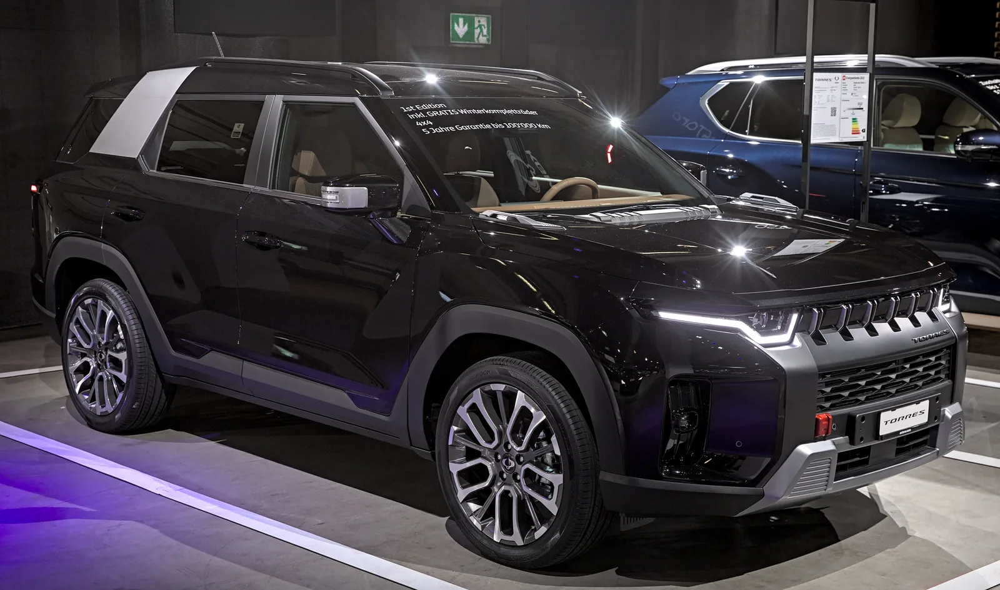
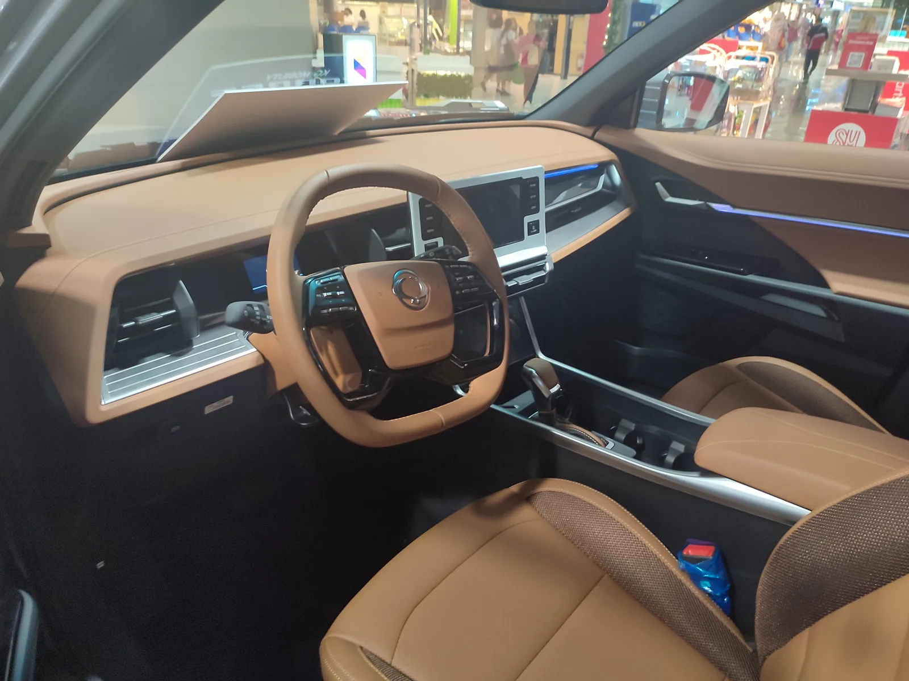
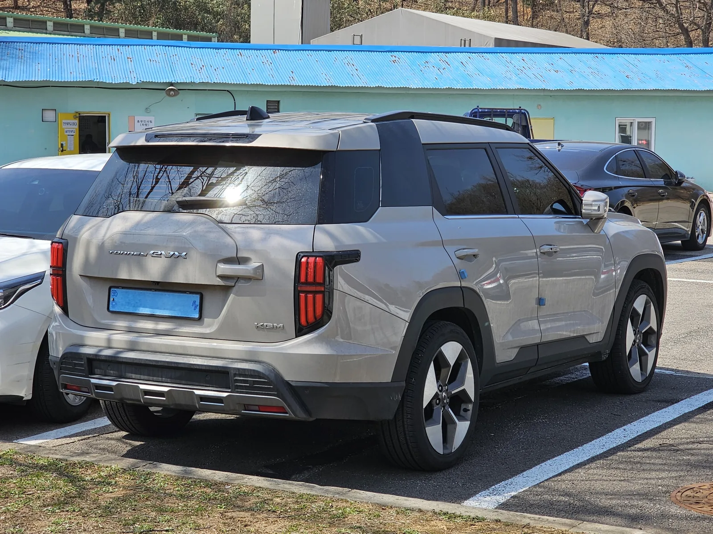

▲ 전시장에 놓인 토레스. 2026년 2분기 두 번째 페이스리프트를 거치며 '뉴 토레스'로 재출시됐다 ⓒ Wikimedia Commons
1. 출시 3년 차, 두 번째 얼굴을 바꿨다
2022년 첫 출시된 KGM 토레스가 2026년 2분기 두 번째 페이스리프트를 거쳐 '뉴 토레스'로 재출시됐다. KG모빌리티의 볼륨 모델인 만큼, 이번 개편은 단순한 외관 손질을 넘어 파워트레인과 편의 사양까지 아우르는 폭넓은 상품성 개선으로 진행됐다. 회사 측은 "페이스리프트 이상의 재정비"라는 표현을 쓸 정도로 변화의 폭에 자신감을 보이고 있다.
외관은 강인한 오프로더 이미지를 유지하면서도 정교함을 더한 것이 특징이다. 전면부는 수평으로 확장된 버티컬 타입 라디에이터 그릴과 범퍼 그릴 패턴이 헤드램프로 매끄럽게 이어지고, 후면부는 차체와 분리된 형태의 리어 범퍼에 입체적인 수직 패턴 스키드 플레이트를 더해 SUV다운 강인함을 강조했다.

▲ 유럽 모터쇼에 전시된 토레스 1st 에디션. 라디에이터 그릴과 스키드 플레이트 디자인에서 이번 개편의 방향성을 엿볼 수 있다 ⓒ Wikimedia Commons

▲ 전시장의 뉴 토레스 전면. 수평으로 확장된 버티컬 타입 라디에이터 그릴이 이번 페이스리프트의 핵심 변화다 ⓒ Wikimedia Commons
2. 파워트레인: 새 아이신 8단 변속기와 e-DHT 하이브리드
가장 눈에 띄는 변화는 파워트레인이다. 가솔린 모델은 기존 그대로 1.5L 터보 엔진(최고출력 170마력, 최대토크 30.6kgf·m)을 쓰지만, 변속기가 새 아이신 8단 자동변속기로 교체됐다. 기존 6단 변속기 대비 단수가 늘면서 가속감과 정속 주행 시 연비 모두 개선됐다는 설명이다.
하이브리드 모델에는 e-DHT(전동화 듀얼 클러치 하이브리드 변속기) 시스템이 새로 투입됐다. 합산 최고출력은 177마력, 최대토크는 30.6kgf·m 수준이며, 복합연비는 리터당 15.3~15.7km로 가솔린(11.0km/L, 2WD 17인치 기준)보다 40% 가까이 우수하다. KGM이 하이브리드 라인업을 SUV 전 차종으로 확대하겠다고 밝힌 전략의 연장선에 있는 변화다.
3. 가격표: 가솔린 2,905만 원, 하이브리드 3,205만 원부터
뉴 토레스는 가솔린 T5·T7, 하이브리드 T5·T7 등 4개 트림으로 나뉜다. 개별소비세 3.5% 기준 가솔린 T5는 2,905만 원, T7은 3,241만 원이다. 하이브리드는 친환경차 세제 혜택을 적용해 T5 3,205만 원, T7 3,651만 원부터 시작한다. 경쟁 모델인 기아 스포티지, 현대 투싼과 비교해도 하이브리드 진입 가격대가 3천만 원대 초반으로 형성돼 있어 가격 경쟁력을 앞세운 전략으로 풀이된다.
| 트림 | 파워트레인 | 가격 |
|---|---|---|
| 가솔린 T5 | 1.5 터보, 8단 자동 | 2,905만 원 |
| 가솔린 T7 | 1.5 터보, 8단 자동 | 3,241만 원 |
| 하이브리드 T5 | 1.5 터보 + e-DHT | 3,205만 원 |
| 하이브리드 T7 | 1.5 터보 + e-DHT | 3,651만 원 |

▲ 토레스 실내. 다이얼식 공조기와 레버 타입 기어노브, 무선 카플레이 지원 등 사용성이 개선됐다 ⓒ Wikimedia Commons
4. 실내 편의 사양도 대거 손질
실내는 소비자 피드백을 적극 반영했다는 게 KGM 설명이다. 조작이 번거롭다는 지적을 받았던 터치식 공조 컨트롤을 다이얼식으로 되돌렸고, 기어노브도 버튼식에서 레버 타입으로 바뀌었다. 무선 애플 카플레이·안드로이드 오토를 지원해 스마트폰 연동 편의성도 높였다. 계기판은 '라이닝 타입' 디지털 클러스터로 교체돼 그래픽 완성도가 개선됐고, 캐빈 필터 옵션도 새로 추가됐다.

▲ 토레스 EVX(전기차) 후면. 가솔린·하이브리드 뉴 토레스도 페이스리프트로 후면 범퍼와 스키드 플레이트 디자인이 새로워졌다 ⓒ Wikimedia Commons
📍 SE10과의 관계는?
KGM은 뉴 토레스와 별개로 중대형 하이브리드 SUV 'SE10' 프로젝트를 체리자동차와 공동 개발 중이다. SE10은 토레스보다 상급 세그먼트를 노리는 완전 신차로, 2026년 말 개발 완료 후 2027년 국내 출시가 유력하게 거론된다. 즉 이번 뉴 토레스는 기존 볼륨 모델의 생애주기를 연장하는 성격이고, SE10은 그 위 세그먼트를 새로 개척하는 별도 프로젝트다.
5. 왜 지금 페이스리프트인가
KGM은 2026년을 '경영 정상화 원년'으로 선언하며 무쏘 브랜드 부활과 하이브리드 풀라인업 확대를 핵심 전략으로 내걸었다. 연간 32만 대 판매를 목표로 하는 상황에서, 토레스는 여전히 KGM 전체 판매의 상당 부분을 차지하는 볼륨 모델이다. 완전변경 신차 출시까지는 시간이 걸리는 만큼, 상품성 개선을 통해 기존 모델의 경쟁력을 유지하려는 전형적인 페이스리프트 전략으로 볼 수 있다.
✅ 뉴 토레스, 이렇게 달라졌다
· 6단→8단(아이신) 자동변속기로 교체(가솔린)
· 하이브리드는 e-DHT 시스템 신규 탑재, 복합연비 15.3~15.7km/L
· 다이얼식 공조기, 레버 타입 기어노브로 조작계 변경
· 무선 카플레이·안드로이드 오토 지원
6. 정리
KG모빌리티가 중형 SUV 토레스의 두 번째 페이스리프트 모델 '뉴 토레스'를 내놨다. 디자인 변화와 함께 가솔린은 새 아이신 8단 변속기를, 하이브리드는 e-DHT 시스템을 새로 얹었다. 가격은 가솔린 2,905만 원, 하이브리드 3,205만 원부터로 책정돼 준중형~중형 SUV 시장에서 가격 경쟁력을 앞세울 것으로 보인다. KGM은 이와 별개로 상급 세그먼트를 노리는 SE10 프로젝트를 병행 중이어서, 뉴 토레스와 SE10이 앞으로 KGM SUV 라인업의 양대 축이 될 전망이다.